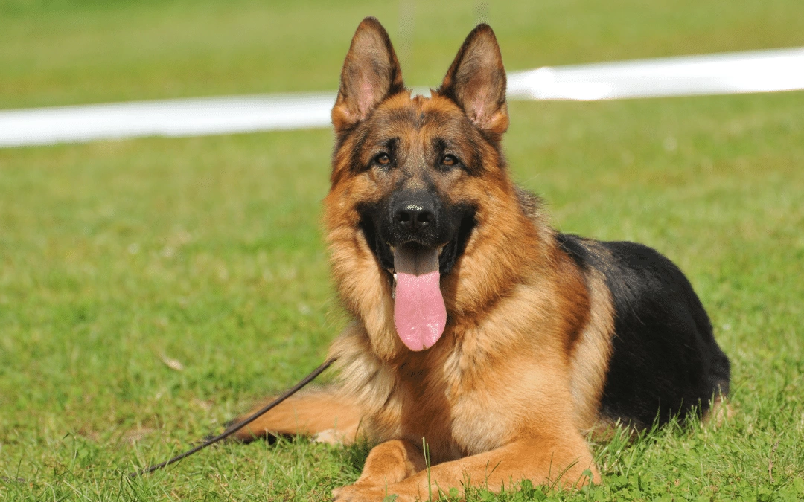

Najpopularniejsze rasy psów:
Wprowadzenie do fascynującego świata psich towarzyszy
Pies jest jednym z najstarszych i najbardziej oddanych towarzyszy człowieka. Od stróżów domów po wiernych przyjaciół, psy są znane ze swojej różnorodności, zarówno pod względem wyglądu, jak i charakteru. Poniżej przedstawiamy krótki przegląd niektórych najpopularniejszych ras psów, które zdobyły serca ludzi na całym świecie.
1. Labrador Retriever
Labrador Retriever to jedna z najbardziej rozpoznawalnych ras na świecie. Są przyjacielscy, inteligentni i łatwo się uczą, co sprawia, że są idealnymi towarzyszami dla rodzin i aktywnych jednostek. Ich energiczna natura sprawia, że świetnie sprawdzają się jako psy do zabaw z dziećmi.
2. Golden Retriever
Złoty Retriever to rasa o złotym umaszczeniu, która jest nie tylko piękna, ale również znana z łagodnego charakteru. Są to psy o wysokiej inteligencji i chęci do zadowalania swoich właścicieli, co czyni je doskonałymi psami terapeutycznymi i pomocniczymi.
3. Owczarek Niemiecki
German Shepherd to rasa, która zyskała ogromną popularność dzięki swojej wszechstronności. Są znakomitymi stróżami, policjantami, a także doskonałymi psami do poszukiwań i ratownictwa. Są inteligentne, wiernie oddane i łatwo się uczą.
4. Bulldog Angielski
Bulldog Angielski to rasa o charakterystycznym wyglądzie, z krótkim pyskiem i silną budową ciała. Pomimo swojego potężnego wyglądu, są one łagodne, przyjacielskie i doskonale sprawdzają się jako towarzysze rodziny.

5. Pudel
Pudel to rasa znana z inteligencji i elegancji. Są dostępne w różnych rozmiarach, od miniaturowych do standardowych, i są jednymi z najbardziej inteligentnych psów, co sprawia, że są doskonałymi uczniami w szkoleniu.

To tylko krótka lista, a świat psich ras jest niezwykle zróżnicowany. Każda rasa ma swoje unikalne cechy, a wybór zależy od indywidualnych preferencji, stylu życia i potrzeb rodziny. Bez względu jednak na rasę, większość psów oferuje bezwarunkową miłość i oddanie, czyniąc nasze życie bogatszym i pełniejszym.